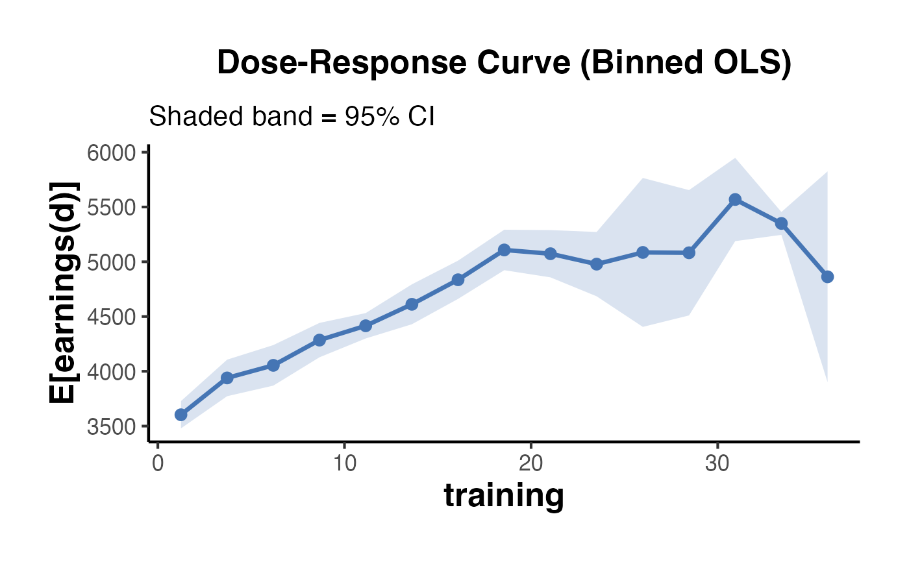

Dose-Response Curve for Continuous Treatment
dose_response_curve.RdEstimates the dose-response function for a continuous treatment using one of three methods and plots the resulting curve with a shaded 95% CI ribbon. The IPW approach follows Hirano & Imbens (2004).
Usage
dose_response_curve(
data,
outcome,
treatment,
covariates = NULL,
n_bins = 20,
method = c("ipw", "ols", "gam"),
plot = TRUE
)Arguments
- data
A data frame.
- outcome
Character. Name of the continuous outcome variable.
- treatment
Character. Name of the continuous treatment variable.
- covariates
Character vector. Names of pre-treatment covariates to adjust for.
NULLfor unadjusted estimates.- n_bins
Integer. Number of bins for the treatment axis. Default
20.- method
Character. Estimation method:
"ipw"(generalised propensity score weighting),"ols"(binned local means), or"gam"(GAM via mgcv, if available). Default"ipw".- plot
Logical. Whether to print and return the plot. Default
TRUE.
Value
A named list:
curve_dfData frame with columns
dose_mid,estimate,ci_lo,ci_hi,n(observations in each bin).plotA ggplot2 object, or
NULLifplot = FALSE.
Details
Dose-Response Curve Estimation for Continuous Treatments
Estimates and visualises the average potential outcome E[Y(d)] as a function of a continuous treatment dose d. Three estimation strategies are available: inverse-probability weighting with a generalised propensity score (IPW), binned OLS, and a generalised additive model (GAM). Returns the estimated curve with 95% confidence intervals and a ggplot2 object.
References
Hirano, K., & Imbens, G. W. (2004). The propensity score with continuous treatments. In A. Gelman & X.-L. Meng (Eds.), Applied Bayesian Modeling and Causal Inference from Incomplete-Data Perspectives. Wiley.
Examples
set.seed(123)
n <- 600
age <- rnorm(n, 35, 10)
# Continuous dose: hours of training (0-40)
dose <- pmax(0, 10 + 3 * (age - 35) / 10 + rnorm(n, 0, 8))
y <- 2000 + 80 * dose - 1.5 * dose^2 + 50 * age + rnorm(n, 0, 500)
df <- data.frame(earnings = y, training = dose, age = age)
result <- dose_response_curve(
data = df,
outcome = "earnings",
treatment = "training",
covariates = "age",
n_bins = 15,
method = "ols"
)
result$plot
